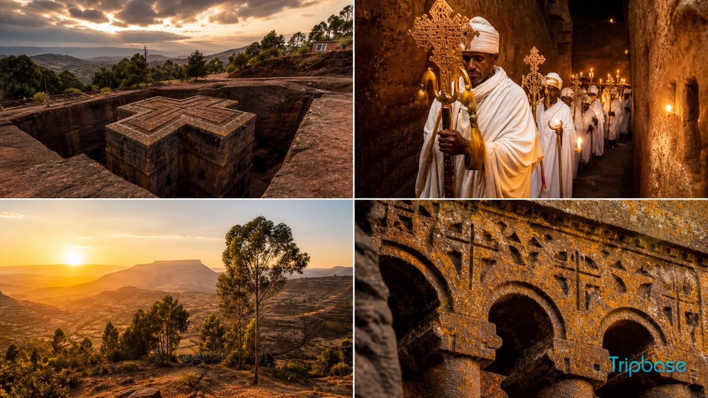
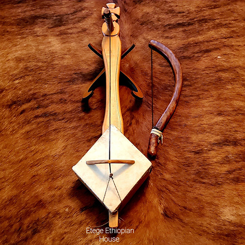

Places Food Culture
Culture

MusicEthiopia is a country filled with ancient history, breathtaking landscapes, diverse cultures, and unique traditions. From the rock-hewn churches of Lalibela to the mountains of the north, there is something fascinating to discover in every corner.Ethiopia, a land of rich history, breathtaking landscapes, and diverse cultures. From the ancient rock-hewn churches of Lalibela to the stunning Simien Mountains, Ethiopia offers unforgettable places to explore. Experience its unique traditions, delicious food, and warm hospitality while discovering the beauty of one of Africa’s most fascinating countries.